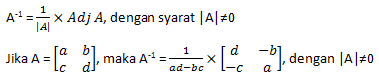

MATRIKS
Pengertian
matriks adalah susunan bilangan-bilangan berbentuk persegi panjang yang diatur dalam baris atau kolom dengan dibatasi kurung.
Baris adalah susunan bilangan-bilangan yang mendatar (horizontal), sedangkan kolom adalah susunan bilangan-bilangan yang tegak (vertikal).

Jenis-Jenis Matriks
Matriks terbagi menjadi beberapa jenis, diantaranya:
1. Matriks nol, matriks yang seluruh elemennya adalah bilangan nol.
2. Matriks baris, matriks yang hanya memiliki satu baris, berordo 1 x j.
3. Matriks kolom, matriks yang hanya memiliki satu kolom, berordo i x 1.
4. Matriks persegi, matriks yang banyaknya baris sama dengan banyaknya kolom, berordo i x i.
5. Matriks diagonal, matriks persegi yang semua elemennya nol, kecuali pada diagonal utamanya.
6. Matriks segitiga atas, matriks persegi yang semua elemen di bawah diagonal utamanya adalah nol.
7. Matriks segitiga bawah, matriks persegi yang semua elemen di atas diagonal utamanya adalah nol.
8. Matriks identitas, matriks persegi yang elemen pada diagonal utamanya adalah satu, sedangkan elemen lainnya adalah nol.
9. Matriks Negataif, matriks yang seluruh elemennya negatif
10. Matriks skalar, matriks diagonal yang memiliki elemen yang sama di setiap diagonalnya
11. Matriks simetris, matriks yang memiliki sifat bahwa transpose nya sama seperti sebelumnya
12. Matriks singular, matriks yang determinan nya nol dan tidak memiliki invers

Operasi Matriks
Penjumlahan dan pengurangan
Jika terdapat dua matriks, misal matriks A dan B, yang memiliki ordo sama, maka elemen-elemen yang seletak dapat dijumlahkan atau dikurangkan


Perkalian Skalar
Matriks dikalikan dengan bilangan skalar. Jika diketahui A merupakan suatu matriks dan K merupakan bilangan real, maka hasil perkalian K dengan matriks A adalah matriks yang diperoleh dengan mengalikan setiap elemen A dengan K.

Perkalian Dua Matriks
Syarat dua buah matriks, misal matriks A dan matriks B, dapat dikalikan adalah jika banyaknya kolom matriks A sama dengan banyaknya baris matriks B.

Transpose Matriks
Matriks A, yang dilambangkan dengan At adalah sebuah matriks yang disusun dengan cara menukarkan baris matriks A menjadi kolom matriks At dan kolom matriks A menjadi baris matriks At.

Determinan Matrix
Didefinisikan sebagai selisih antara perkalian elemen-elemen pada diagonal utama dengan perkalian elemen-elemen pada diagonal sekunder. Determinan matriks hanya dapat ditentukan pada matriks persegi. Determinan dari matriks A dapat dituliskan det(A) atau |A|.


|A| = (a.e.i) + (b.f.g) +( c.d.h) – (c.e.g) – (a.f.h) – (b.d.i)
|A| = (a.e.i + b.f.g + c.d.h) – (c.e.g + a.f.h + b.d.i)
Invers Matriks
Kebalikan (invers) dari sebuah matriks yang apabila matriks tersebut dikalikan dengan inversnya, akan menjadi matriks identitas. Invers matriks dilambangkan dengan A-1. Suatu matriks dikatakan memiliki invers jika determinan dari matriks tersebut tidak sama dengan nol.


Matriks persegi A dieliminasi menggunakan operasi aljabar sampai membentuk matriks identitas. Operasi yang dilakukan pada matriks A juga dilakukan pada matriks identitas sehingga jika matriks A sudah menjadi matriks identitas, maka matriks identitas akan berubah menjadi invers dari matriks A.
Kelompok 4
M Takhlis Griska Rafi (070)
Josua Moreno Silitonga (091)
Pniel Alfrado Salakay (092)